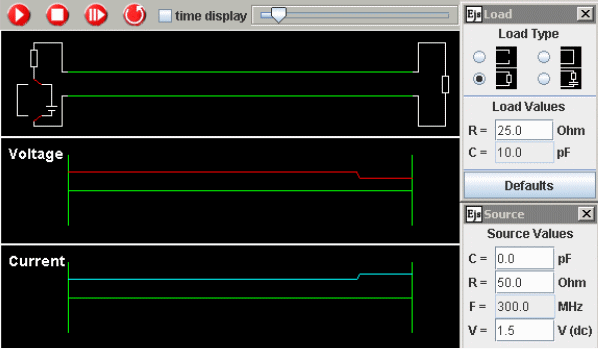

The simulation program TL is based on solutions of Maxwell´s equations in one dimension, the so-called transmission line equations. The algorithm was developed originally by Zvonko Fazarinc with later additions by Ernesto Martín, and has been proven to be stable and correct for all possible border conditions and parameter settings.
The program TL can be applied primarily to visualize dynamic processes on a double line with superposition and reflection as basic concepts. This is useful not only for ac and high frequency systems but also for dc-currents when the focus is set on transition processes, linking different stationary states, determined by Ohm´s law and Kirchhoff´s laws.
